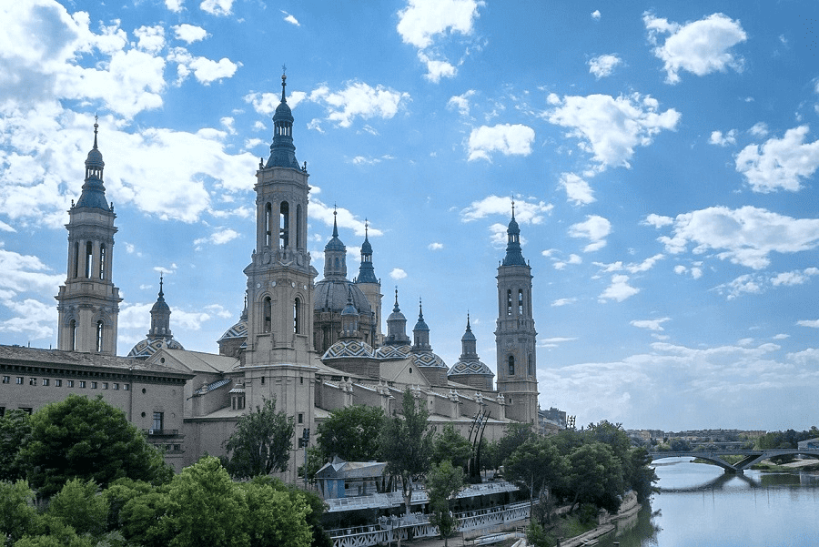
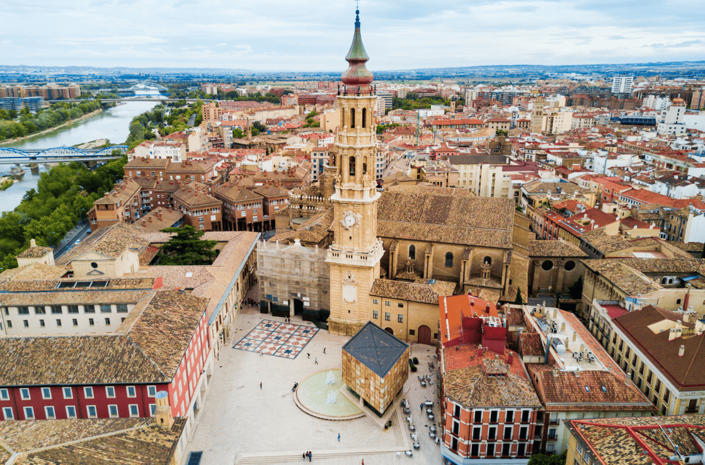

Zaragoza es una ciudad con más de 2000 años de historia, conocida por su colosal Basílica del Pilar, su fundación romana, su diversidad cultural y la cercanía de sus gentes.
Un cruce de caminos
Zaragoza, capital de Aragón, es la quinta ciudad española en número de habitantes. Situada en un cruce de caminos entre otras grandes ciudades españolas, la capital del Ebro destaca por ser un destino ideal para un city break. Su aeropuerto internacional, su estación de tren de alta velocidad y su red radial de carreteras la sitúan a 2/3 horas de los principales destinos del norte y centro de España, así como del sur de Francia.

Un destino de sorpresas
Zaragoza es un destino en el que es fácil sentirse a gusto. La cercanía de sus gentes, la accesibilidad de sus espacios y la frescura de sus cielos azules son el mejor marco para una ciudad dotada de un rico patrimonio, caracterizado por su diversidad cultural.Zaragoza cuenta, además, con un casco histórico monumental y peatonal, grandes espacios verdes con carácter singular, kilómetros de carril bici, transporte urbano sostenible, una gran diversidad de plazas, miradores, terrazas, rincones, sorpresas, palacios, museos e iglesias. Y a ello se suma el cálido ambiente social de sus calles, la variedad gastronómica de sus locales, su tapeo y su ocio nocturno.

Y una ciudad monumental
Zaragoza es patrimonio histórico monumental. Entre sus calles aflora la herencia de sus cuatro culturas ancestrales. Su principal atractivo, la Basílica de Nuestra Señora del Pilar, es el símbolo de la ciudad y segunda catedral de Zaragoza. En su interior destacan las hermosas obras de Francisco de Goya y la venerada talla de la Virgen del Pilar. Un imprescindible de la visita a la Basílica es la subida a la torre mirador de San Francisco de Borja.A pocos pasos se encuentra la Catedral del Salvador, templo histórico principal de la ciudad y referente del arte mudéjar aragonés, declarado Patrimonio Histórico de la Humanidad por la UNESCO. En su interior alberga además una de las mejores colecciones de tapices flamencos de los siglos XV-XVII.